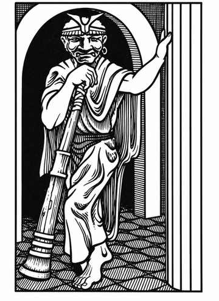
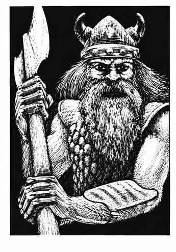
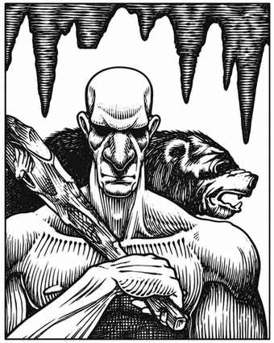
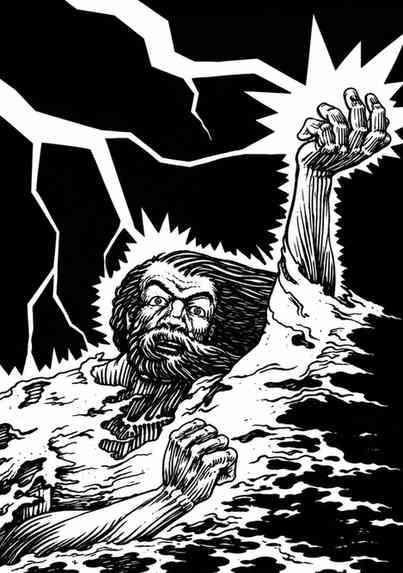

巨人 · Giant
巨人是体型庞大的类人生物，共有六个主要种族。它们既有相似之处，也各具差异；本节先介绍共通特征，再分别说明每一族的独有特点。
巨人的力量远超人类，力量值为 19–25。凭借这份力量，它们能拾起石块，像投石器发射弹药那样将其掷出，而且没有投石器的最小射程限制。
多数巨人居住在洞穴中。离开巢穴时，各类巨人总会携带一个巨大的袋子，里面装着一些只有巨人自己才觉得珍贵的杂物：一两块大石头，以及 1,000–6,000 枚某种钱币，通常是金币。
巨人常显得愚笨，却往往颇有心计；有时可以骗过它们，若从强势地位与其接触，它们也可能愿意谈判。巨人贪图财宝，因此并不罕见它们与阵营相近的生物结伴行动。
幼年巨人的生命值与伤害，按骰掷出的成熟度百分比折算为成年雄性的相应数值。
每个巨人种族都有自己的方言，其他种族无法听懂；它们也会说相应的阵营语。
云巨人 · Cloud Giant
 |
|
与较常见的巨人不同，云巨人通常住在山顶或魔法云岛上的粗陋城堡中。在巢穴中遭遇时，有 60% 概率有 1–4 只斑点狮作为宠物或守卫。若在巢穴遇到多只云巨人，第二只为巨人女性的概率为 75%（生命骰与伤害按火巨人计算），其他为幼年巨人（掷百分骰确定成熟度）；若共遇到 6 只，其中一只幼年巨人为成年雄性、一只为成年雌性，另两只为任一性别的亚成年巨人（掷 1–3 为雄性，4–6 为雌性）。
成年云巨人能将石块掷至 1–24 寸远，命中造成 2–24 点伤害；它们有 60% 概率接住同类投来的石块。云巨人嗅觉敏锐，因此只有遭遇骰为 1 时才会被突袭。10% 的云巨人智力极高，这些个体居住在云岛上；它们每天可两次使自己及额外不超过 20,000 金币重量的物体悬浮。邪恶的云巨人巢穴中有 50% 概率关押 1–3 名俘虏作奴隶。
外观。 云巨人肤色从淡蓝白到浅蓝不等，头发为银白色或黄铜色，穿戴各类衣物与珠宝，并以巨型棍棒为武器。
火巨人 · Fire Giant
 |
|
火巨人住在城堡或洞穴中的概率相近。在巢穴中有 25% 概率以 1–4 只最大体型的地狱犬看守。若巢穴中遇到 4 只以上火巨人，额外出现者为巨人女性（生命骰与伤害按霜巨人计算）；但若总数达到 7 或 8，最后一至两只是幼年巨人（掷百分骰确定体型）。
成年火巨人能将石块掷至 1–20 寸远，命中造成 2–20 点伤害；它们有 50% 概率接住同类投来的石块。火巨人不受火焰伤害，包括红龙的吐息。
外观。 火巨人肩宽约 6 尺，看起来几乎像矮人。它们皮肤煤黑，头发火红或亮橙，眼睛深红，牙齿通常黄橙色；身穿盔甲或龙皮，偏爱巨剑。
霜巨人 · Frost Giant
 |
|
霜巨人通常居住在城堡，也常在寒冷洞穴中筑巢。巢穴中有 50% 概率有 1–6 只冬狼看守。若在巢穴中遇到 4 只以上，编号 5、6 的是巨人女性（生命骰与伤害按石巨人计算），编号 7、8 的是幼年巨人（掷百分骰确定体型）。
成年霜巨人能将石块掷至 1–20 寸远，命中造成 2–20 点伤害；它们有 40% 概率接住同类投来的石块。霜巨人不受寒冷伤害，包括白龙的吐息。
外观。 霜巨人肤色惨白如骨或象牙，头发为蓝白色或黄色，眼睛淡蓝或黄色；体格与强壮的人类相似，只是尺寸更大。它们穿盔甲，武器样式近似北方蛮族所用装备。
山丘巨人 · Hill Giant
 |
|
山丘巨人总是居住在洞穴或类似的地下住所，巢穴通常位于偏远地区。巢穴中有 50% 概率另有守卫生物：2–8 只恐狼（50%）、1–3 只巨蜥（30%），或 2–8 个食人魔（20%）。若巢穴中遇到 4 只以上，编号 5、7、9 的是巨人女性（6 颗生命骰，伤害按食人魔计算），编号 6、8、10 的是幼年山丘巨人（掷百分骰确定体型）。
成年山丘巨人能将石块掷至 1–20 寸远，命中造成 2–16 点伤害；50% 的山丘巨人还会说食人魔语。
外观。 山丘巨人肤色从黄褐色到红棕色不等，头发棕色至黑色，眼睛带红边。它们通常穿粗糙的兽皮衣，使用任何能找到的武器，但偏爱棍棒。
石巨人 · Stone Giant
 |
|
石巨人大多居于山区，住在洞穴或山洞中。它们喜欢穴熊，巢穴有 75% 概率由 1–4 只穴熊守卫。若巢穴中遇到 4 只以上，编号 5、6 的是巨人女性（生命骰与伤害按山丘巨人计算），编号 7、8 的是幼年巨人（掷百分骰确定体型）。
石巨人有时很爱嬉闹，尤其在夜间。成年石巨人喜欢把石块掷至 1–30 寸远，命中造成 3–30 点伤害；它们有 90% 概率接住同类投来的石块。
外观。 石巨人肤色从灰色到灰褐色，头发深灰至蓝灰，眼睛像银或钢铁般泛着金属光泽。它们外形醒目，却能轻易融入岩石环境；身穿岩石色衣物，通常以石制武器为装备。
风暴巨人 · Storm Giant
 |
|
风暴巨人是最强大、最受尊敬的真正巨人。这些通常隐居的巨人只生活在偏僻之地：巢穴有 60% 位于云岛，30% 位于山峰，10% 位于水下；它们会在那里建造宽敞的城堡。巢穴有 30% 概率饲养动物作为守卫或宠物。居住在云岛或山峰上的风暴巨人有 70% 概率饲养 1–2 只巨鹰，也会将其作为坐骑；另有 30% 概率饲养 1–4 只狮鹫。水下的风暴巨人则会有 2–8 头海狮。
风暴巨人不掷石攻击，而是施展天赋魔法与法术。每天一次，它可以发出 8 枚八面骰伤害的闪电箭；每天两次，它可使自己以及额外不超过 30,000 金币重量的物体悬浮。它还能随意在水下正常呼吸；水下的风暴巨人也可正常移动并施放闪电箭。它每天还可各施展以下法术一次，每次只施展一种：预言天气、召唤闪电（3 道闪电，每道造成 10–15 枚六面骰伤害）、控制风向、召唤风暴。风暴巨人被激怒进入战斗时，很可能先召唤风暴并引来闪电，因为暴风雨最适合愤怒的风暴巨人作战。
风暴巨人不受电击能量伤害，包括蓝龙吐息造成的电击。
外观。 风暴巨人的肤色从浅淡的绿到紫色不等；海生个体通常为绿色，长着深绿头发与翡翠绿眼睛。其他风暴巨人的头发多为深紫或蓝黑色，眼睛为银灰或紫色。